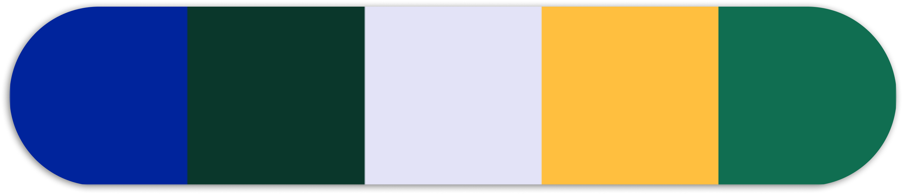
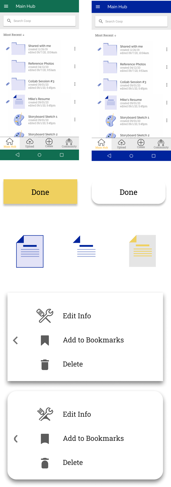

Coop
When it comes to the creative process, an uninterrupted workflow can mean the difference between a stroke of inspiration and starting at a blank page. Coop wants to provide an online platform that allows teams to remotely create, share, and collaborate on projects without having to lose momentum. In addition to conducting research and developing the designs necessary to implement this task, I was happy to be able to craft an identity that accurately reflects the vision of the stakeholders and users alike.
Role
Tools
Deliverables
Problem
Services that are intended to facilitate remote work often cater to a homogenized user pool and often leave a large portion of users with a cluttered interface and extraneous features. Additionally, certain demographics that require a prioritization of collaboration, social connection, and iteration control are overlooked.
Solution
We developed an application that caters to the creative industry workforce, which we discovered is a widely overlooked demographic in this market. What emerged after iterating and testing our designs is an application that prioritizes features that assist creative workflow and social interaction without hindering a wider user pool from engaging in the baseline file storage and sharing capabilities.

the discovery phase
At the outset it was understood that the intention was to introduce a new application to the remote file storage and sharing market. Otherwise, it was too early to begin shaping the end product. We still needed to research the market and survey potential users to discover the identity and desires of our target audience.
I deployed an initial survey to determine the most frequently used remote storage and file sharing apps, then started with a comprehensive SWOT analysis of each of them. I then diagrammed user flows for each application, detailing three key actions: onboarding, saving an item, and organizing items. This helped to distinguish consistent or unique elements that exist in the competition’s user flows, and made helped me form an understanding of the nuances that set each apart.
I was starting to form a better understanding of the competition, but I still needed to deploy another more extensive round of user surveys in order to nail down a clearer picture of our power user, and what features will dominate our minimum viable product.
analyzing the data
- 77% expressed the importance of remote collaboration
- 55% deemed social connectivity features a necessity
- 95% of those who reported working in a creative industry (photographers, illustrators, novelists, etc.) expressed the need for an easier way to collaborate remotely.
- All agreed features that are must-haves include multi-media file uploading, easy organization, streamlined sharing, as well as the ability to create text documents.

It was made clear that users who rely heavily and specifically on file organization and text editing features are generally happy with the products they’re currently using. In tandem with my prior market research, it appeared as if our competitors have a stronghold on office and professional use. Dissatisfied users generally wished that collaboration features were more prevalent. These users reported having jobs in marketing, illustration, and design, meaning our competitors don’t have a firm grip on a creative audience. After reviewing this user study, I was able to determine the best path forward was to position the product as a storage hub that makes collaboration on remote creative projects more convenient and accessible. The key features revolving around real-time collaboration, and social connectivity.
getting to know the user
The previously conducted research gave me a solid foundation to identify user personas. Each persona acts as a compilation of the motivations, frustrations, and goals discovered from the potential users surveyed previously, and from their ideation forward they will act as a summation of who will ultimately be engaging with the application.
With the defined users in mind, I was able to brainstorm and prioritize specific functionality that the application will provide. Keeping a an eye on the aforementioned data streamlined this process and helped to avoid blindspots while avoid superfluous features.
With this I had everything I needed to construct educated user flow diagrams for the most high priority features.


the design
Now it was time to use all the knowledge gained in the discovery proccess to hash out how to apply the identified features to a material design. I began by sketching out wireframe iterations by hand.
I then replicated those sketches in Sketch and assembled the first clickable prototype with InVision. Click the button below to see the first prototype.
usability testing
Before going any further, it was important to put these early iterations in front of some test subjects. The primary focus for these initial tests was to ensure that the structure, logic of the flow patterns, and information architecture were translating well to the user, and if they weren’t, use the opportunity to properly identify the problem and develop solutions based on user feedback.
The first round of usability testing was showing that the previous effort poured establishling the foundation for the design proved effective, but more importantly I was able to identify a few immensely important components of the design that needed to corrected. A few of the testers experienced enough confusion with the onboarding process to warrant an audit of the current flow pattern. With their feedback I was able to identify the pain points and provide a more descriptive but less overbearing onboarding approach.
Other functions that I was able to successfully rework as a result of user feedback revealed themseles on the main hub of the platform. The ability to organize materials was initially confined to a right-click function, which in retrospect defied the heirarchy of the previously established user stories. The testers’ experience reminded me of that fact, and I implemented an easier way to simply create a new organizational subfolder.
Additionally, this created a good opportunity to create a more prominent “Add Content” button, establishing a clearer solution to one of the most important functions of the product.
Upon passing a second round of usablity testing, I was feeling confident that this early iteration of the design was meeting the functionality and usablity of the minimum viable product.
branding & identity
Acting as the sole designer on this project, it was also my duty to create and properly implement the branding for this new product. At this point, all I had to work with was the understanding of how the product is intended to function, and who the target audience is.
Establishing the foundation
At a bare minumum, Coop was to function as a remote, collaborative storage platform, so it was warranted to conduct some brief research into how similar products are branded. The goal was to learn how I could implement some of the common successful elements while also establishing a distinct brand that speaks to our target audience.After that I committed to sketching and moodboarding until a solid theme was established, from which the specific branding elements could emerge
Typography
Primary: RalewayRaleway displays as a strong and simple primary font. The geometric design and low contrast promote readiablity, while the medium-high x-height lends an expressive element.
Complementary: Roboto SlabRoboto Slab serves as an appropriate complement to Raleway with similar x-height and openness but with added serifs.
color
The colors I picked were chosen based on the previous moodboards, and were picked with the intention to be used sparingly across the platform. A complementary pallete gives the ability to draw attention to important functional aspects while maintaining conservative use of heavy fill colors.
Compiling the style guide
All of these brand decisions funnelled into a comprehensive style guide to aid in the iminent build out of a high fidelity prototype and any future changes to the design.

High Fidelity Iterations
Leveraging the style guide
The style guide was put to work immediately as an atlas for layering the branding aspects over the wireframes.
Key elements as well as whole page layouts were then paired with their alternatively styled counterparts and put in front of an audience for a series of preference tests. When the results established a pattern, I made revisions to reflect the feedback.

High Fidelity Prototype
Feeling almost ready to apply the finishing touches on this project, I transformed the new mock-ups into another clickable prototype through InVision. I then turned to another pool of testers to give more feedback. With the vast majority of the structural and functional kinks worked out, I was given feeback that primarily focused on the aesthetic portion of the design. I also wanted to ensure that any implementation of the branding wasn’t impeding on the previously refined functional qualities.
Final Refinements
Adjusting to the feedback from this round of prototype testing was the last step in finalizing the Coop prototype and wrapping up this project.
Conclusion
There are well established products that offer remote collaboration and content storage, but through this project I was able to create a brand and functional platform that caters to a user pool that this market typically doesn’t account for.With giants like Google Drive occupying the scene, it’s difficult to imagine establishing a design system that outweighs the competition. However, I was surprised to find my own user flows that proved easier to use in usability tests.That said, the competition dominating this market is generally feature-rich to an extent I wasn’t able to reach. While the minimum viable product was certainly delivered, given more time, I would have supplied Coop users with the ability to create spreadsheets, collaborate over video, or complete other more complex tasks.